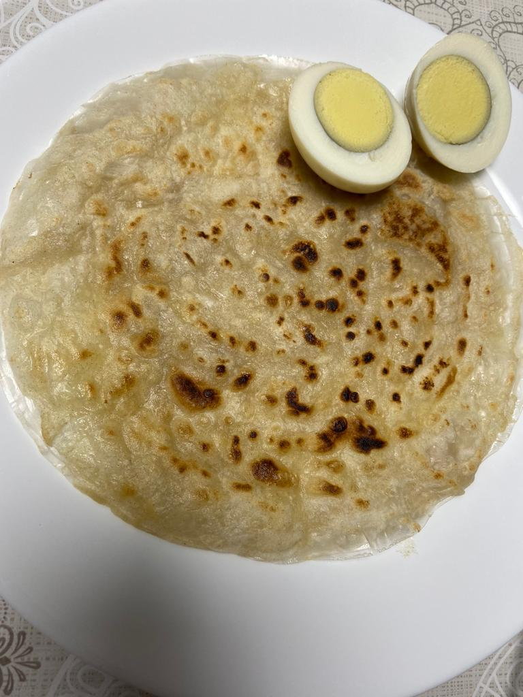
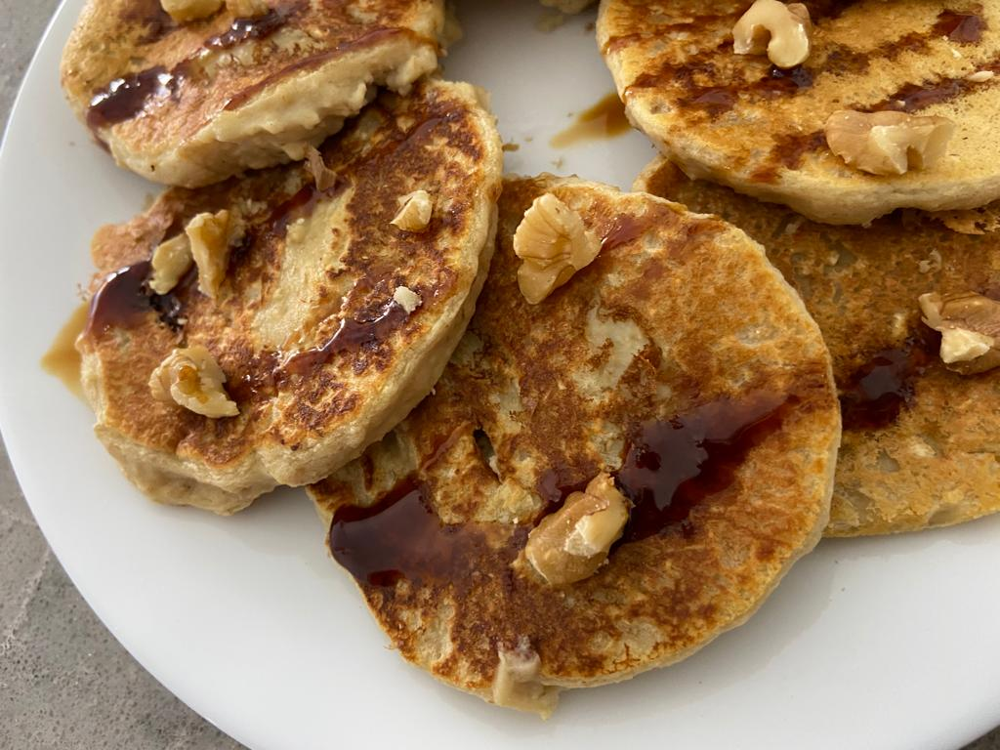
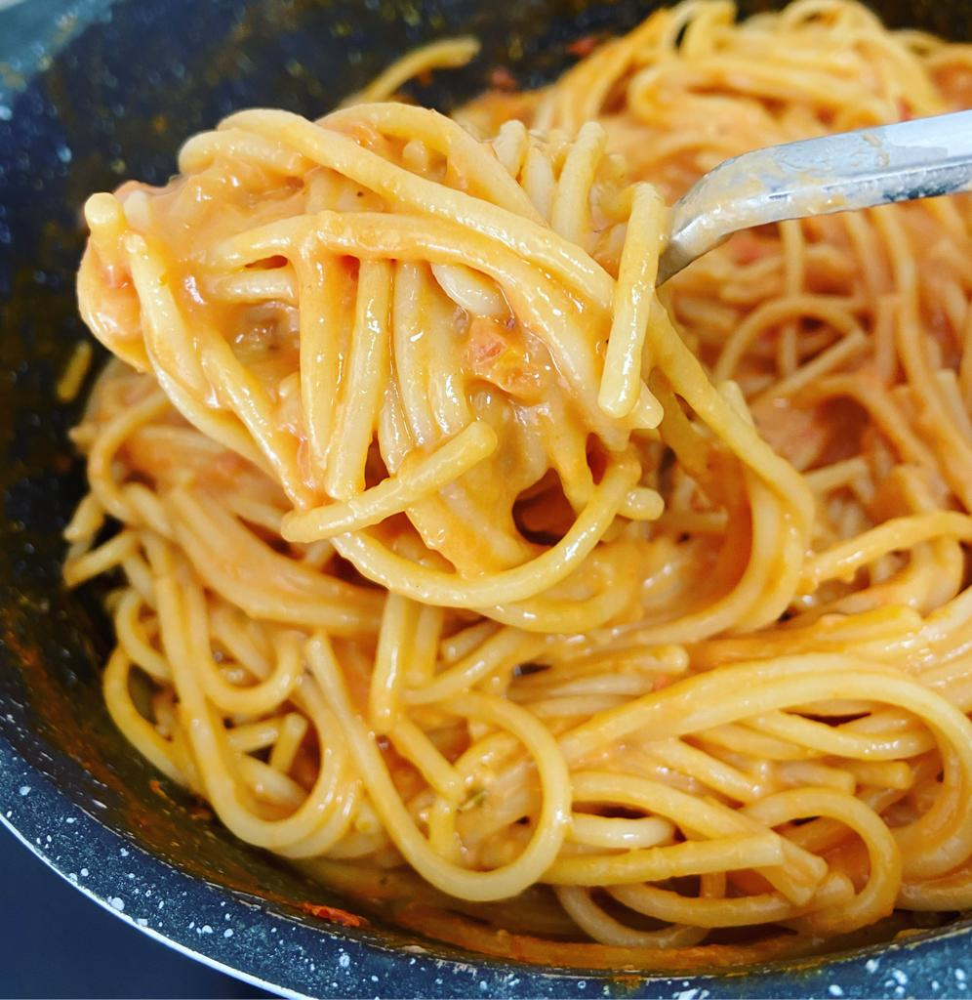
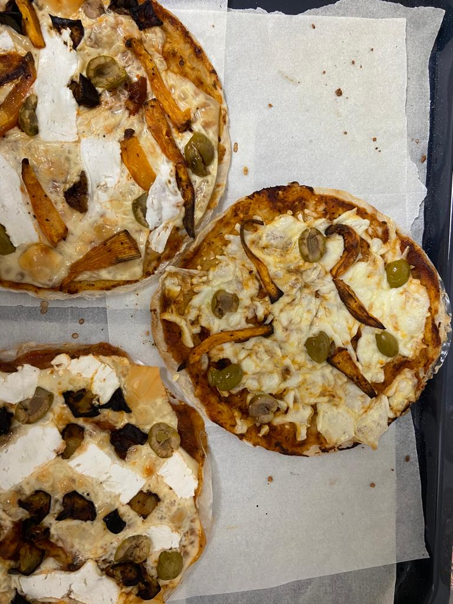
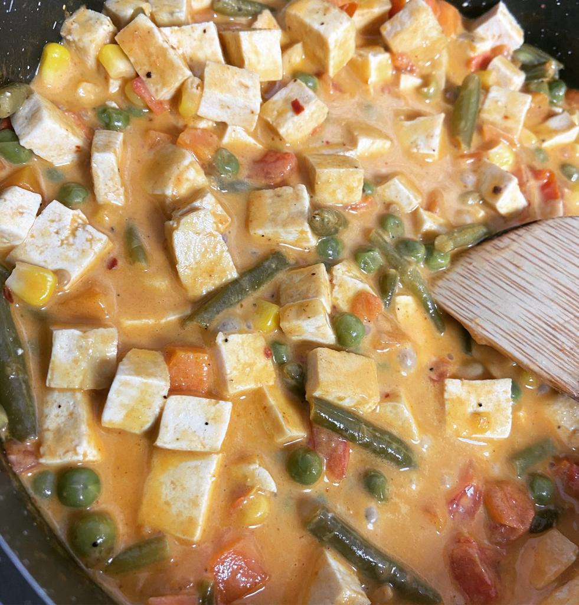
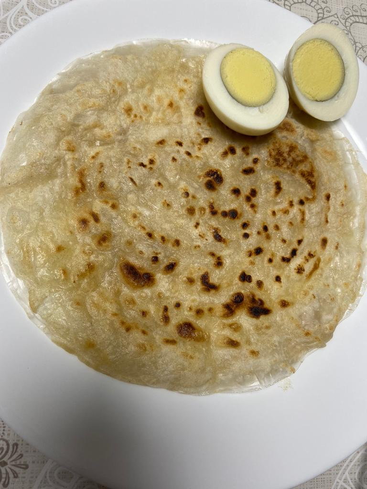
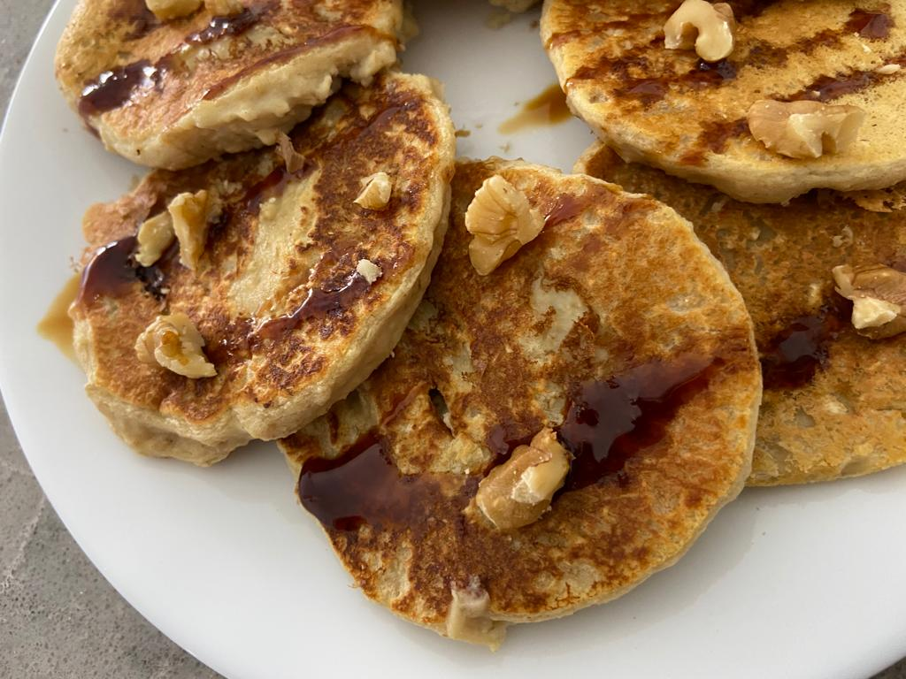
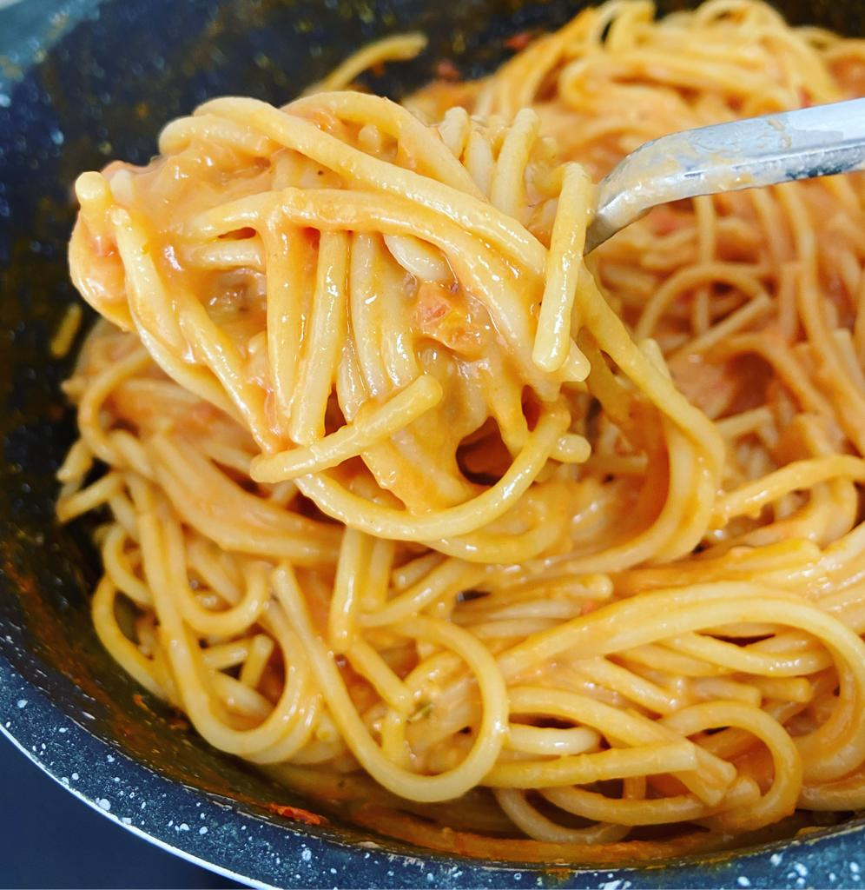
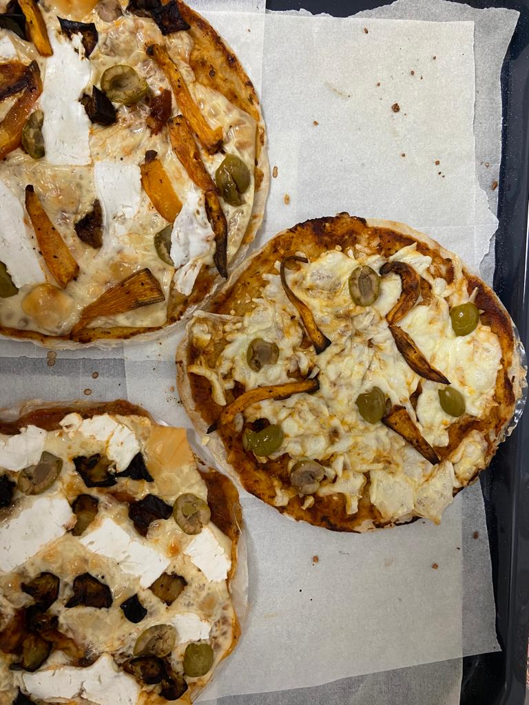
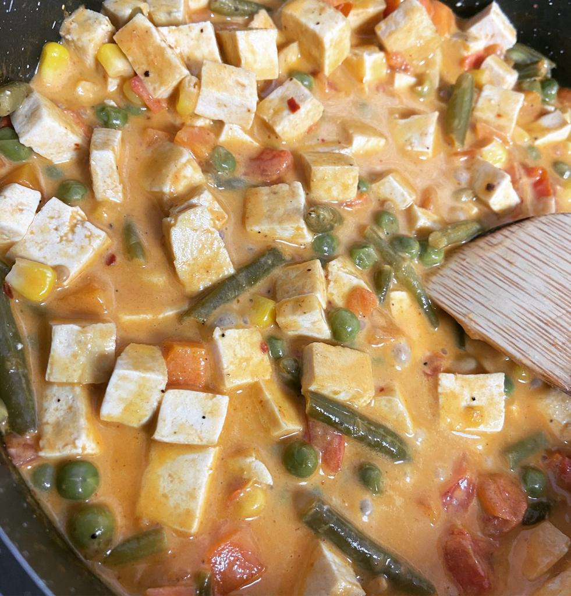

שלום לכולם
שמי הוא ירדן בן עמי, אני בת 25 מאזור חיפה
לאחרונה התחלתי ללמוד את תחום בדיקות התוכנה
-כשנודע לי שאני צריכה לבנות אתר כחלק מהקורס ישר ידעתי שאני הולכת לבנות אתר שיציג את מתכוני הדגל שלי
מתכונים בריאים, קלים להכנה וסופר טעימים
כל המתכונים פותחו על ידי, שוכללו והוכנו בשנים האחרונות עשרות פעמים
המטרה שלי היא להעביר את המסר, שלחיות אורח חיים בריא יכול להיות קל, כיפיי ולא פחות טעים
:) בנוסף, אפשר להכין כל מזון שאוהבים בגרסא יותר בריאה וכך גם להנות ממנו יותר וגם להשאר בריאים ומאושרים
 








